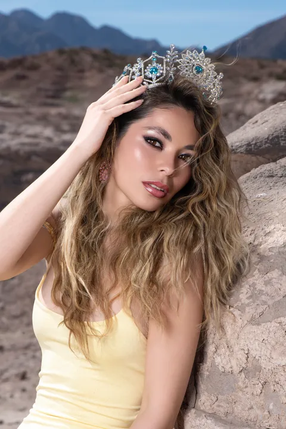
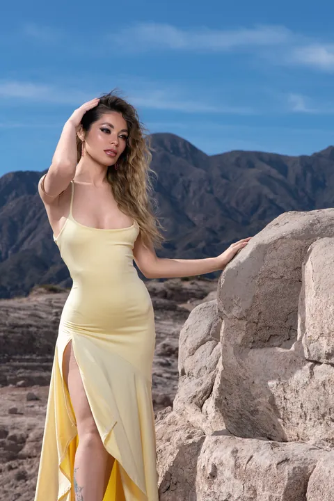
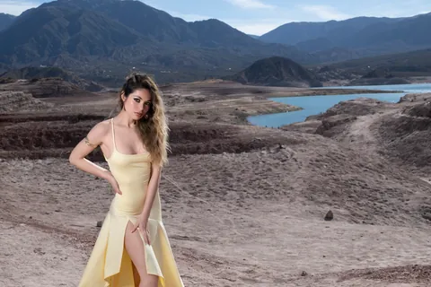
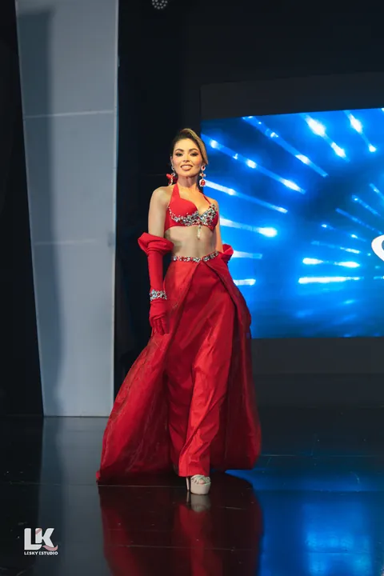
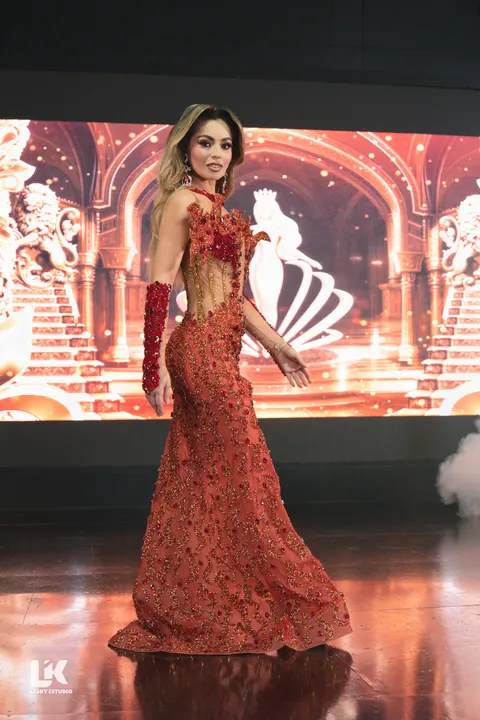

Prensa
Sala de prensa
Datos, textos y fotos de Daiana Contrera para usar en notas. Actualizado el 27/10/2026.
Entrevistas y pedidosprensa@daianacontrera.com
01 Datos
Datos
- Nombre
- Daiana Contrera, sin «s» al final
- Es de
- Guaymallén, Mendoza, Argentina
- Títulos
- Miss Belleza Marina Internacional 2026: Punta Cana, República Dominicana, 16/10/2026, entre once delegaciones.
Miss Belleza Marina Argentina 2025: final nacional de Miss y Teen Argentina, en Buenos Aires. - Además
- Enseña pasarela, estudia Educación Física y es la dueña y fundadora de Sans Étiquette, una productora de eventos de moda de Mendoza.
- @daii_contreraa
02 Textos
Biografía, para copiar
Corta
51 palabrasDaiana Contrera es de Guaymallén, Mendoza. El 16/10/2026 ganó Miss Belleza Marina Internacional en Punta Cana, República Dominicana, entre once delegaciones; había llegado como Miss Belleza Marina Argentina 2025. Enseña pasarela, estudia Educación Física y es la fundadora de Sans Étiquette, una productora de eventos de moda de Mendoza.
Larga
184 palabrasDaiana Contrera es de Guaymallén, Mendoza. El 16/10/2026 ganó Miss Belleza Marina Internacional en Punta Cana, República Dominicana, donde compitieron once delegaciones. Había llegado como Miss Belleza Marina Argentina 2025, título que ganó en la final nacional de Miss y Teen Argentina, en Buenos Aires, después de tres días de concentración y de meses de clases de oratoria, presencia escénica y pasarela.
Belleza Marina es un certamen que, en sus palabras, «pone el foco en la belleza integral y el cuidado de nuestros mares, océanos y playas». Para la noche de trajes típicos eligió el ceibo, la flor nacional, en un traje del diseñador Sergio Castro.
Enseña pasarela y estudia Educación Física. Es la dueña y fundadora de Sans Étiquette, una productora de eventos de moda de Mendoza, que organizó Sin Etiqueta Vol. 1 en el Espacio Arizu, un taller y dos desfiles: uno en el Hotel Hilton Mendoza y otro en el Espacio Cultural Julio Le Parc.
Sobre por qué empezó, dijo en una entrevista de radio: «Empecé no para exhibirme, sino para ganar seguridad al hablar y mostrarme en público».
03 Fotos
Fotos para descargar
Para notas sobre Daiana, con el crédito que figura debajo de cada una. JPG en sRGB, sin recortar.
Descargar las 6 fotos ZIP · 7,0 MB










04 En los medios
En los medios
- 22/10/2026Los AndesQuién es la mendocina que se quedó con la corona del Miss Belleza Marina 2026Bernarda García Centurión
- 22/10/2026Diario UnoDaiana Contrera, la mendocina que ganó la corona internacional de Miss Belleza Marina 2026Paola Alé
- 22/10/2026ADN PaísHistorica coronacion: la mendocina Daiana Contrera es la nueva Miss Belleza Marina